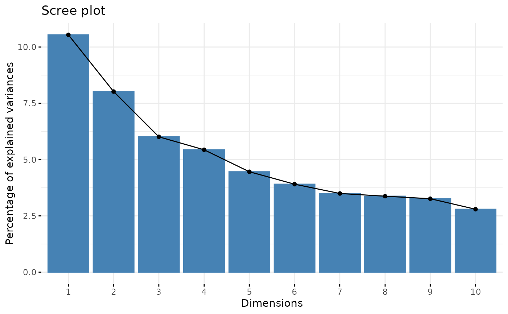

Return a scree plot to visualize the eigenvalues of the PCA.
Arguments
- ta
A tidytacos object.
- ...
Arguments passed on to
factoextra::fviz_eigXan object of class PCA, CA, MCA, FAMD, MFA and HMFA [FactoMineR]; prcomp and princomp [stats]; dudi, pca, coa and acm [ade4]; ca and mjca [ca package].
choicea text specifying the data to be plotted. Allowed values are "variance" or "eigenvalue".
geoma text specifying the geometry to be used for the graph. Allowed values are "bar" for barplot, "line" for lineplot or c("bar", "line") to use both types.
barfillfill color for bar plot.
barcoloroutline color for bar plot.
linecolorcolor for line plot (when geom contains "line").
ncpa numeric value specifying the number of dimensions to be shown.
addlabelslogical value. If TRUE, labels are added at the top of bars or points showing the information retained by each dimension.
hjusthorizontal adjustment of the labels.
main,xlab,ylabplot main and axis titles.
ggthemefunction, ggplot2 theme name. Default value is theme_pubr(). Allowed values include ggplot2 official themes: theme_gray(), theme_bw(), theme_minimal(), theme_classic(), theme_void(), ....
Examples
urt %>% tacoplot_scree()
